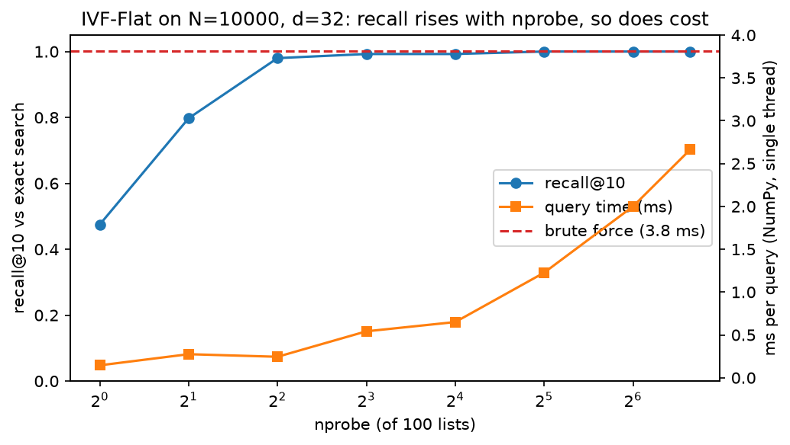
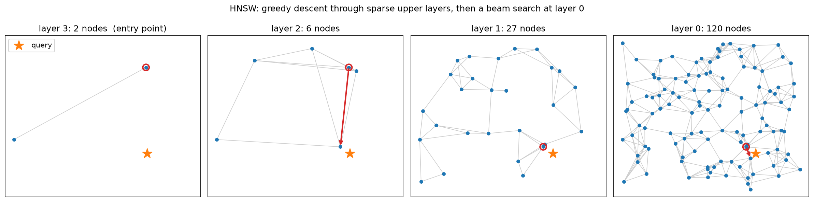
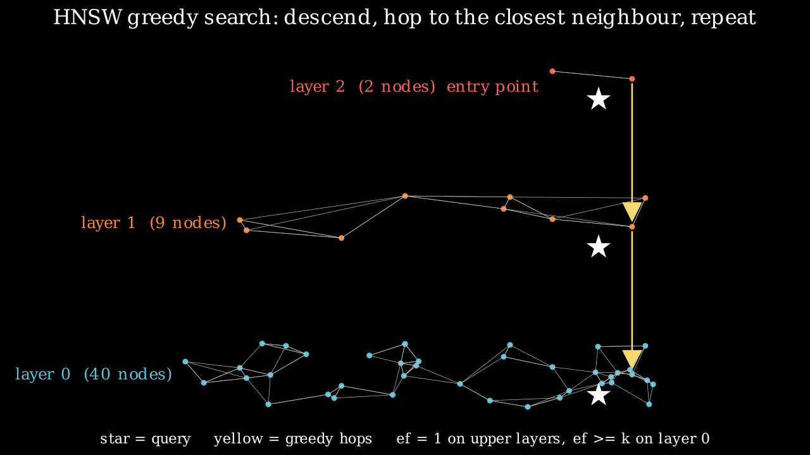
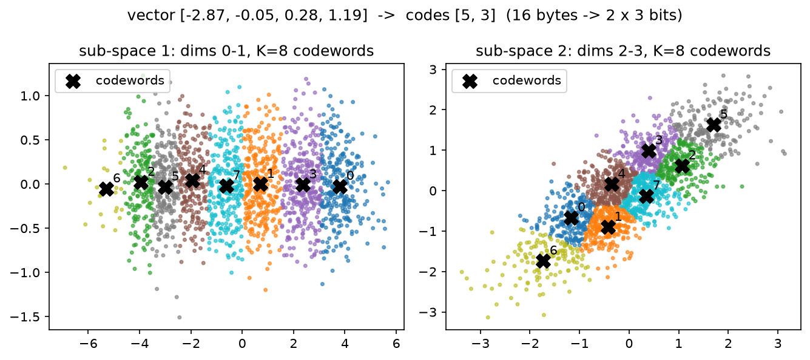

Retrieval & RAG¶
Why this matters at staff level. Retrieval is the one ML system almost every company runs at scale: search, recommendations, ads, visual search, and now every LLM product that has to know something the model was not trained on. In ML depth rounds you will be asked to derive BM25 or the MIPS-to-nearest-neighbour reduction and to explain why HNSW beats IVF at high recall; in system-design rounds you will be asked to size an index, choose a filter strategy, and say how you would know the RAG system is any good. Strong signal is naming the recall / latency / memory trade-off with numbers, committing to an index type, and describing the evaluation before the model.
TL;DR: the interview card¶
- For unit vectors, \(\norm{q-x}^2 = 2 - 2\cos(q,x)\): cosine, dot product and Euclidean give the same ranking. They differ only when norms carry information (popularity, confidence). MIPS reduces to NN by appending \(\sqrt{M^2-\norm{x}^2}\) to each corpus vector and \(0\) to the query.
- Bi-encoder: embed once, score with a dot product, \(O(N d)\) per query and ANN-able. Cross-encoder: one Transformer pass per (query, doc) pair, far more accurate, only affordable on the top-\(k\) (reranking). Train bi-encoders with InfoNCE, in-batch negatives, hard negatives, and log-Q correction when sampling is non-uniform.
- BM25: \(\sum_t \mathrm{IDF}(t)\,\frac{f(k_1+1)}{f + k_1(1-b+b\,|D|/\mathrm{avgdl})}\). Saturating TF (\(k_1\)) plus length normalisation (\(b\)). Still the strongest zero-shot lexical baseline; hybrid (BM25 + dense) fused with RRF beats either alone.
- IVF: k-means coarse quantiser, scan
nprobeofn_listlists; cost \(\approx d\,(n_{\text{list}} + n_{\text{probe}} N / n_{\text{list}})\), minimised at \(n_{\text{list}} \approx \sqrt{n_{\text{probe}} N}\). HNSW: layered proximity graph, greedy descent then beam search; \(O(\log N)\) hops, parametersM(degree) andef(beam). PQ: \(M\) sub-quantisers with \(K\) codewords each store a vector in \(M \log_2 K\) bits (128-float, 512 B \(\to\) 8 B for \(M=8, K=256\)) and score with \(M\) table look-ups (asymmetric distance). - Recall@k vs latency vs memory: flat (exact, \(N d\) floats), IVF-Flat (fast, exact memory), HNSW (best latency at high recall, +\(M\) ints per vector, slow builds), IVF-PQ (100× less memory, lower recall), GPU flat/IVF for batch throughput.
- Filtering: pre-filter (exact, cheap when the filter is selective), post-filter (cheap, can return fewer than \(k\)), in-filter / predicate-aware graph traversal (what the vector DBs actually do at medium selectivity).
- RAG = query rewrite → hybrid retrieval → rerank → context assembly with citations → generation → grounding check. Evaluate retrieval (recall@k, MRR) separately from generation (faithfulness, answer relevance) and from product success.
- Long context does not replace retrieval: cost is linear in context per query, recall degrades with position ("lost in the middle"), and you still need citations.
- Production: Facebook Search EBR (KDD 2020), YouTube two-tower with sampling-bias correction (RecSys 2019), Faiss (Meta), ScaNN (Google), Anthropic's contextual retrieval.
1. Intuition first¶
Take four documents and a query, all embedded into \(\R^3\) and L2-normalised:
| id | text | embedding |
|---|---|---|
| 0 | "cats purr" | \((0.9, 0.4, 0.2)/\norm{\cdot}\) |
| 1 | "dogs bark" | \((0.8, -0.5, 0.3)/\norm{\cdot}\) |
| 2 | "index funds" | \((-0.2, 0.3, 0.9)/\norm{\cdot}\) |
| 3 | "kittens meow" | \((0.85, 0.5, 0.1)/\norm{\cdot}\) |
The query "do cats meow" embeds to \(q = (0.9, 0.45, 0.15)/\norm{\cdot}\). Retrieval is a single matrix–vector product \(s = Xq \in \R^4\) followed by an argsort: documents 3 and 0 score near \(1\), document 2 near \(0\). This is all "dense retrieval" is. Three things make it hard in practice:
- \(N\) is large. \(N = 10^9\) vectors of \(d = 128\) floats is 512 GB; scanning it per query is \(1.3\times10^{11}\) FLOPs. You need an index that touches a small fraction of the corpus (IVF, HNSW) and a compression that fits it in RAM (PQ).
- The embedding is only as good as its training. "do cats meow" and "kittens meow" share no tokens; a lexical method would miss it, a good embedder will not. The reverse failure exists too: an exact product code "XR-2201-B" is trivial for BM25 and terrible for most embedders. Hybrid retrieval exists because both failure modes are real.
- Retrieval is not the product. A RAG assistant is judged on whether the answer is correct and grounded. Retrieval recall is necessary, not sufficient.
The pipeline you will build in §3 is the one you will draw on the whiteboard:
flowchart LR
Q[query] --> RW[rewrite / expand<br/>HyDE, multi-query]
RW --> D[dense ANN<br/>IVF / HNSW]
RW --> S[sparse BM25]
D --> F[fuse: RRF]
S --> F
F --> MF[metadata filter]
MF --> RR[rerank<br/>cross-encoder]
RR --> C[context assembly<br/>numbered chunks]
C --> G[LLM answer<br/>with citations]
G --> V[grounding check]Each arrow is a place where recall is lost, and §4 tells you how to measure each one.
2. The math¶
2.1 Similarities and when they differ¶
For \(q, x \in \R^d\):
If every corpus vector and the query are L2-normalised, \(\norm{q}=\norm{x}=1\) and
so the three orderings coincide and you should pick whichever your index computes fastest (dot product). They diverge when norms differ. Two cases matter in production:
- Norm carries signal you want. In two-tower recommenders the item norm often grows with popularity; ranking by dot product then bakes in a popularity prior. That is sometimes what you want (retrieval stage) and sometimes not (diversity). Decide, do not discover.
- Norm is noise. Embeddings from a model trained with a cosine objective but stored un-normalised will rank by length. Normalise at index time and at query time.
MIPS to NN. Maximum inner product search is not a metric problem: \(q^\top x\) can be made large by scaling \(x\). The reduction (Bachrach et al. 2014; Shrivastava & Li 2014) lifts every corpus vector to a sphere. With \(M = \max_i \norm{x_i}\),
so \(\norm{x'} = M\) for every \(x\) and
because \(\norm{q}^2 + M^2\) is constant over the corpus. Any L2 index now solves MIPS.
This is exactly what Faiss's IndexFlatIP-on-L2-hardware paths and older ANN libraries do
internally.
2.2 Bi-encoders, cross-encoders, and how embeddings are trained¶
A bi-encoder maps query and document independently, \(e_q = f_\theta(q)\),
\(e_d = g_\phi(d)\), and scores with \(s(q,d) = e_q^\top e_d\). The corpus is embedded once;
serving cost is one query encode plus an ANN lookup. A cross-encoder feeds
[CLS] q [SEP] d through one Transformer and reads a scalar: full token-level
interaction, so it is much more accurate, but it costs a forward pass per document and
cannot be indexed. The production pattern is therefore bi-encoder for the top-1000,
cross-encoder for the top-50, and the interview question is always "why not cross-encode
everything?" (answer: \(N\) forward passes per query; at \(N=10^7\) that is minutes per query).
Contrastive training (InfoNCE). With a batch of \(B\) (query, positive) pairs, treat the other \(B-1\) positives as negatives:
This is a \(B\)-way softmax cross-entropy whose gradient with respect to the logits is \(p - y\) (see softmax regression): each negative is pushed away in proportion to how confusable it already is. In-batch negatives are free (one \(B\times B\) matrix product), but they are random and therefore mostly easy. Two corrections make the difference between a demo and a production retriever:
- Hard negatives. Add, per query, documents that BM25 or the previous model ranked highly but that are not relevant. Facebook's EBR paper (Huang et al. 2020) reports that the hardest negatives hurt (many are false negatives or too-close-to-call), and that negatives sampled from the middle of the ranked list, blended with easy random negatives, worked best.
- Sampling-bias (log-Q) correction. When the batch is drawn from a stream, popular items appear as negatives far more often than uniformly. Yi et al. (RecSys 2019) correct the logit: \(s(q_i,d_j) \leftarrow s(q_i,d_j) - \log \hat p_j\), where \(\hat p_j\) is the estimated sampling probability of item \(j\). Subtracting \(\log \hat p_j\) inside the softmax is the importance-weighting that makes the in-batch estimator unbiased for the full softmax over the catalogue.
Matryoshka embeddings (Kusupati et al. 2022) train the same loss on nested prefixes of the vector, \(\mathcal L = \sum_{m \in \{64, 128, \dots, d\}} \mathcal L(e[:m])\), so a truncated \(64\)-dim prefix is a usable coarse embedding. Serving use: shortlist with the prefix (cheap ANN), rerank with the full vector.
2.3 BM25: derive it, do not memorise it¶
Start from the binary independence model: rank documents by \(\log \frac{P(D \mid R)}{P(D \mid \bar R)}\) with term presence independent given relevance. With \(p_t = P(t \in D \mid R)\) and \(u_t = P(t \in D \mid \bar R)\), the document-independent parts drop out and the score is a sum over query terms present in \(D\) of the Robertson–Spärck Jones weight
With no relevance information take \(p_t = 0.5\) and \(u_t \approx n_t / N\) (the term's document frequency over the corpus). Adding the usual \(0.5\) smoothing gives
(Lucene adds \(+1\) inside the log so it can never go negative for terms in more than half the documents; our implementation does the same.)
Term-frequency saturation. The BIM ignores how often \(t\) occurs. The 2-Poisson model (a term is drawn from one Poisson if the document is "about" it, another if not) yields a weight that rises with \(f\) and saturates. Robertson replaced the intractable exact form with the simplest function with those properties,
which is \(0\) at \(f=0\), \(1\) at \(f=1\), and tends to \(k_1 + 1\) as \(f\to\infty\). \(k_1\) sets how fast: \(k_1 = 0\) is binary presence, \(k_1 \to \infty\) is raw TF.
Length normalisation. A long document has more occurrences by chance. Replace \(k_1\) by \(k_1\,(1 - b + b\,|D|/\mathrm{avgdl})\): at \(b=1\) the TF is fully normalised by relative length, at \(b=0\) not at all. Putting the pieces together:
It means: a document scores for each query term it contains, more for rare terms, with diminishing returns in repetition, discounted if the document is long. SPLADE (Formal et al. 2021) keeps this inverted-index shape but learns the term weights: a BERT MLM head produces a sparse vocabulary-sized vector per document with a log-saturation \(\log(1 + \mathrm{ReLU}(\cdot))\) and an L1/FLOPS regulariser, so "expansion" terms the document never contains can get weight. You serve it with the same posting lists as BM25.
2.4 Approximate nearest neighbours: three cost models¶
IVF (inverted file). Run k-means with \(n_{\text{list}}\) centroids (the coarse quantiser), assign each vector to its nearest centroid, and at query time scan only the \(n_{\text{probe}}\) lists whose centroids are closest. If lists are balanced, distance computations per query are
For \(N = 10^6\) and \(n_{\text{probe}} = 8\) that is \(n_{\text{list}} \approx 2{,}800\); Faiss's guidance of \(4\sqrt N\) to \(16\sqrt N\) lists is this formula with a typical probe count folded in. Recall is lost when the true neighbour sits in a list you did not probe, which happens most for queries near a Voronoi boundary: that is why recall rises quickly then plateaus with \(n_{\text{probe}}\) (see the figure in §3).
HNSW. Build a graph where each node links to \(M\) near neighbours; a greedy walk ("move to the neighbour closest to \(q\)") converges to a local optimum in few hops if the graph has long-range links. HNSW gets those links from layers: node \(i\) is inserted up to level
so \(P(\ell_i \ge \ell) = e^{-\ell/m_L} = M^{-\ell}\): layer \(\ell\) holds about \(N M^{-\ell}\) nodes and there are \(\approx \log_M N\) layers. Search starts at the top layer's single entry point, walks greedily with beam width \(1\) down to layer 1, then at layer 0 runs a beam search with \(ef \ge k\) candidates. Each hop costs \(M\) distance computations and the number of hops is \(O(\log N)\) under the small-world assumption, so
M trades memory (\(M\) int32 neighbours per node on layer 0, \(2M\) in many
implementations) and build time for recall; ef (search) trades latency for recall at
query time with no rebuild, which is why it is the knob you expose to callers. The
pruning heuristic in the paper (keep a candidate only if it is closer to the new node
than to any already-kept neighbour) is what preserves long-range links; our
implementation uses the simpler "keep the \(M\) closest" which is adequate for
a few thousand points and shows the same scaling.
PQ (product quantisation). Split \(x \in \R^d\) into \(M\) sub-vectors of \(d/M\) dims and quantise each with its own \(K\)-word codebook \(C_m \in \R^{K \times d/M}\). Storage per vector becomes
For \(d = 128\), \(M = 8\), \(K = 256\): \(8 \times 8 = 64\) bits \(= 8\) bytes against \(512\) bytes, a \(64\times\) reduction, while the effective number of centroids is \(K^M = 256^8 \approx 1.8\times10^{19}\) for only \(M K \, d/M = K d\) stored floats. Asymmetric distance computation (ADC) keeps the query exact: precompute \(T[m, j] = \norm{q_m - C_m[j]}^2\), an \(M\times K\) table (\(8\times256\) floats, in L1 cache), then
\(M\) look-ups and adds per vector instead of \(d\) multiply-adds. The estimate is unbiased up to the quantisation error of \(x\) alone (symmetric DC quantises \(q\) too and doubles the error). IVF-PQ combines both: quantise the residual \(x - c_{\text{list}}\), which has lower variance than \(x\) and therefore smaller distortion per bit.
OPQ and anisotropic quantisation (literacy). PQ assumes sub-spaces are roughly independent and equally important; correlated dimensions waste codewords (the PQ figure in §3 shows a correlated sub-space where several codewords line up along one diagonal). OPQ (Ge et al. 2013) learns an orthogonal rotation \(R\) before splitting so that variance is balanced across sub-spaces. ScaNN's anisotropic loss (Guo et al. 2020) observes that for MIPS what matters is the error parallel to the query direction, not the total error, and weights the quantisation loss to penalise parallel error more; that is the reason ScaNN's recall-vs-throughput curve beats plain PQ at the same bit budget.
2.5 Reciprocal rank fusion¶
Sparse and dense scores live on different scales (BM25 is unbounded, cosine is in \([-1,1]\)), so adding them requires calibration. Rank fusion sidesteps it:
\(k\) damps the contribution of top ranks so that a document ranked first by one system and absent from the other does not automatically win. Cormack, Clarke and Buettcher (SIGIR 2009) found it competitive with learned fusion; in practice it is the default in every vector DB's "hybrid" mode because it needs no tuning per corpus.
2.6 What "good" means for RAG¶
Retrieval and generation must be scored separately, because they fail separately:
| Stage | Metric | Definition |
|---|---|---|
| retrieval | recall@k | fraction of gold passages present in the top-\(k\) |
| retrieval | MRR / NDCG@k | position-aware; see Evaluation §2.3 |
| context | context precision | fraction of retrieved chunks that are relevant (RAGAS) |
| generation | faithfulness | fraction of answer claims supported by the context (NLI or LLM judge) |
| generation | answer relevance | does the answer address the question (judge) |
| generation | citation precision | fraction of cited chunks that support the cited claim |
| product | task success / deflection / thumbs-up | what the business measures |
RAGAS (Es et al. 2023) formalised faithfulness as: decompose the answer into atomic statements, ask a judge whether each is entailed by the context, report the supported fraction. Everything in Evaluation §2.7 about validating judges applies.
3. Implementation¶
All code lives in src/mlbook/retrieval/. The pieces below are the ones you should be
able to write on a whiteboard; the full files are collapsed at the end of the section.
3.1 Similarities and the MIPS reduction¶
def squared_euclidean(Q: np.ndarray, X: np.ndarray) -> np.ndarray:
q2 = np.sum(Q * Q, axis=1, keepdims=True) # (Nq, 1)
x2 = np.sum(X * X, axis=1)[None, :] # (1, N)
d2 = q2 + x2 - 2.0 * (Q @ X.T) # (Nq, N)
return np.maximum(d2, 0.0) # (Nq, N)
def mips_to_nn_corpus(X: np.ndarray) -> np.ndarray:
norms2 = np.sum(X * X, axis=1) # (N,)
M2 = float(np.max(norms2))
extra = np.sqrt(np.maximum(M2 - norms2, 0.0))[:, None] # (N, 1)
return np.concatenate([X, extra], axis=1) # (N, d + 1)
The expansion form of the squared distance is what every index actually computes: one
GEMM plus two norm vectors, never an explicit \((N_q, N, d)\) difference tensor. The
np.maximum(…, 0) absorbs the rounding that makes a self-distance come out at \(-10^{-13}\).
3.2 BM25¶
def term_score(self, tf: float, doc_len: float) -> float:
denom = tf + self.k1 * (1.0 - self.b + self.b * doc_len / self.avgdl)
return tf * (self.k1 + 1.0) / denom
def score(self, query: str) -> np.ndarray:
scores = np.zeros(self.n_docs) # (N,)
for term in tokenize(query):
idf = self.idf.get(term)
if idf is None:
continue
for i, tf in enumerate(self.doc_tfs):
f = tf.get(term, 0)
if f:
scores[i] += idf * self.term_score(f, self.doc_lens[i])
return scores
The loop over all documents is the toy version; a real engine iterates the posting
list of each term (only documents containing it), which is why sparse retrieval is fast
for rare terms and slow for stop words. The IDF is precomputed in fit exactly as boxed
in §2.3.
3.3 IVF¶
def search(self, q: np.ndarray, k: int, nprobe: int = 1):
q2 = q[None, :] # (1, d)
cd2 = squared_euclidean(q2, self.centroids)[0] # (n_list,)
probe = np.argsort(cd2)[:nprobe] # (nprobe,)
cand = np.concatenate([self.lists[j] for j in probe]) # (n_cand,)
d2 = squared_euclidean(q2, self.X[cand])[0] # (n_cand,)
k = min(k, cand.size)
order = np.argsort(d2)[:k] # (k,)
return cand[order], d2[order]
Two scans: n_list centroid distances, then n_cand ≈ nprobe · N / n_list exact
distances. The k-means that builds the centroids uses k-means++ seeding
(kmeans_pp_init) because a bad seed produces empty or giant lists and the cost model
above assumes balance.

Recall@10 (blue) climbs steeply and saturates while query time (orange) keeps rising
linearly with nprobe; at nprobe = n_list you pay more than brute force because of
the extra centroid scan. Pick the knee.
3.4 HNSW beam search¶
def _search_layer(self, q, entry, ef, layer):
d0 = self._dist(q, entry)
visited = {entry}
candidates = [(d0, entry)] # min-heap on distance
results = [(-d0, entry)] # max-heap (negated) of the current best ef
while candidates:
d_c, c = heapq.heappop(candidates)
if d_c > -results[0][0]:
break # nothing closer left to expand
for nb in self.graph[layer].get(c, ()):
if nb in visited:
continue
visited.add(nb)
d_nb = self._dist(q, nb)
if d_nb < -results[0][0] or len(results) < ef:
heapq.heappush(candidates, (d_nb, nb))
heapq.heappush(results, (-d_nb, nb))
if len(results) > ef:
heapq.heappop(results)
return sorted((-d, i) for d, i in results)
This is the whole algorithm: a best-first expansion bounded by a fixed-size result
heap. ef = 1 makes it the greedy walk used on upper layers; ef ≥ k at layer 0 makes it
a beam search whose recall grows with ef. Insertion (add) runs the same routine to find
the M neighbours to link to on every layer the new node lives in.

Layer counts fall geometrically (120 → 27 → 6 → 2 with M = 4); the red arrows are the
greedy hops. Upper layers move the search across the space in one or two hops; layer 0
finishes it locally.

3.5 PQ with asymmetric distances¶
def distance_table(self, q: np.ndarray) -> np.ndarray:
table = np.zeros((self.M, self.K)) # (M, K)
for m in range(self.M):
q_sub = q[m * self.d_sub : (m + 1) * self.d_sub][None, :] # (1, d_sub)
table[m] = squared_euclidean(q_sub, self.codebooks[m])[0] # (K,)
return table
def asymmetric_distances(self, q: np.ndarray, codes: np.ndarray) -> np.ndarray:
table = self.distance_table(q) # (M, K)
rows = np.arange(self.M)[None, :] # (1, M)
return table[rows, codes].sum(axis=1) # (N,)
table[rows, codes] gathers, for every stored vector, the \(M\) entries selected by its
codes, that single fancy-index line is the "\(M\) look-ups per vector" from §2.4. The test
checks that the ADC distance equals the exact distance to the reconstructed vector,
which is the identity that makes ADC correct.

Two sub-spaces of a 4-dim vector with \(K = 8\) codewords each; the vector in the title becomes the pair of codes \((5, 3)\). The right-hand sub-space is correlated, so codewords line up along a diagonal and waste resolution, the case OPQ's rotation fixes.
3.6 RRF and the RAG pipeline¶
def reciprocal_rank_fusion(rankings, k=60):
fused: dict[int, float] = {}
for ranking in rankings:
for rank, doc_id in enumerate(ranking, start=1):
fused[doc_id] = fused.get(doc_id, 0.0) + 1.0 / (k + rank)
return sorted(fused.items(), key=lambda kv: (-kv[1], kv[0]))
def retrieve(self, query, k=5, k_candidates=20, metadata_filter=None, nprobe=2):
dense_ids = self._dense(query, k_candidates, nprobe) # list of k_candidates ids
sparse_ids, _ = self.bm25.topk(query, k_candidates) # (k_candidates,)
fused = reciprocal_rank_fusion([dense_ids, sparse_ids.tolist()], k=self.rrf_k)
cands = [self.chunks[i] for i, _ in fused]
if metadata_filter is not None:
cands = [c for c in cands if metadata_filter(c.metadata)] # post-filter
scores = self.reranker(query, cands) # (n_cand,)
order = np.argsort(-scores, kind="stable")[:k] # (k,)
return [cands[i] for i in order]
RAGPipeline.index chunks each document (structural by default: blank-line
paragraphs, which is what OCR block output looks like), embeds the chunks with the
hashing embedder (a deterministic stand-in for a neural encoder), fits BM25, and
optionally builds an IVF index. answer composes a prompt with numbered context blocks
and calls a deterministic extractive generator that returns the best-matching sentence
with a [i] citation, so the whole pipeline, including citation precision and a lexical
faithfulness score, is testable offline in milliseconds.
How you'd test it. tests/test_retrieval_similarity.py checks the MIPS reduction
recovers the argmax inner product on vectors with varied norms. test_retrieval_bm25.py
checks the IDF formula and a hand-computed document score. test_retrieval_ivf.py
checks that nprobe = n_list equals brute force and recall is monotone in nprobe.
test_retrieval_hnsw.py checks degree caps, geometric layer sizes and recall@10 ≥ 0.9
at ef = 100. test_retrieval_pq.py checks ADC equals the distance to the
reconstruction. test_retrieval_hybrid.py checks RRF against hand-computed values.
test_retrieval_rag.py runs the pipeline end to end with and without IVF and with a
metadata filter.
Full implementation: src/mlbook/retrieval/similarity.py
"""Similarity functions and the MIPS -> nearest-neighbour reduction (NumPy).
Conventions: row-major data, one vector per row.
Q: (Nq, d) queries, X: (N, d) corpus.
Equations implemented
dot(q, x) = q . x
cos(q, x) = q . x / (||q|| ||x||)
||q - x||^2 = ||q||^2 + ||x||^2 - 2 q . x
When rows are L2-normalised all three orderings coincide:
||q - x||^2 = 2 - 2 cos(q, x).
"""
from __future__ import annotations
import numpy as np
def normalize_rows(X: np.ndarray, eps: float = 1e-12) -> np.ndarray:
"""L2-normalise each row. (N, d) -> (N, d)."""
norms = np.linalg.norm(X, axis=1, keepdims=True) # (N, 1)
return X / np.maximum(norms, eps) # (N, d)
def dot_product(Q: np.ndarray, X: np.ndarray) -> np.ndarray:
"""Inner products. Q (Nq, d), X (N, d) -> (Nq, N)."""
return Q @ X.T # (Nq, N)
def cosine_similarity(Q: np.ndarray, X: np.ndarray) -> np.ndarray:
"""Cosine similarity. Q (Nq, d), X (N, d) -> (Nq, N)."""
Qn = normalize_rows(Q) # (Nq, d)
Xn = normalize_rows(X) # (N, d)
return Qn @ Xn.T # (Nq, N)
def squared_euclidean(Q: np.ndarray, X: np.ndarray) -> np.ndarray:
"""Squared L2 distance via the expansion ||q||^2 + ||x||^2 - 2 q.x.
Q (Nq, d), X (N, d) -> (Nq, N). Clipped at 0 to absorb rounding error.
"""
q2 = np.sum(Q * Q, axis=1, keepdims=True) # (Nq, 1)
x2 = np.sum(X * X, axis=1)[None, :] # (1, N)
d2 = q2 + x2 - 2.0 * (Q @ X.T) # (Nq, N)
return np.maximum(d2, 0.0) # (Nq, N)
def mips_to_nn_corpus(X: np.ndarray) -> np.ndarray:
"""Augment the corpus so that inner-product search becomes L2 search.
Shrivastava & Li (2014) / Bachrach et al. (2014): with M = max_i ||x_i||,
x' = [x, sqrt(M^2 - ||x||^2)] (all x' have norm M)
q' = [q, 0]
||q' - x'||^2 = ||q||^2 + M^2 - 2 q.x
so argmin_x ||q' - x'|| = argmax_x q.x. X (N, d) -> (N, d + 1).
"""
norms2 = np.sum(X * X, axis=1) # (N,)
M2 = float(np.max(norms2))
extra = np.sqrt(np.maximum(M2 - norms2, 0.0))[:, None] # (N, 1)
return np.concatenate([X, extra], axis=1) # (N, d + 1)
def mips_to_nn_query(Q: np.ndarray) -> np.ndarray:
"""Append a zero coordinate to each query. Q (Nq, d) -> (Nq, d + 1)."""
zeros = np.zeros((Q.shape[0], 1), dtype=Q.dtype) # (Nq, 1)
return np.concatenate([Q, zeros], axis=1) # (Nq, d + 1)
def brute_force_topk(
Q: np.ndarray, X: np.ndarray, k: int, metric: str = "dot"
) -> tuple[np.ndarray, np.ndarray]:
"""Exact top-k by scanning the whole corpus.
metric in {"dot", "cosine", "l2"}. Returns (ids (Nq, k), scores (Nq, k)) ordered
best-first; for "l2" the score is the squared distance (smaller is better).
"""
if metric == "dot":
S = dot_product(Q, X) # (Nq, N)
elif metric == "cosine":
S = cosine_similarity(Q, X) # (Nq, N)
elif metric == "l2":
S = -squared_euclidean(Q, X) # (Nq, N) negate so larger is better
else:
raise ValueError(f"unknown metric {metric}")
k = min(k, X.shape[0])
part = np.argpartition(-S, k - 1, axis=1)[:, :k] # (Nq, k) unordered top-k
part_scores = np.take_along_axis(S, part, axis=1) # (Nq, k)
order = np.argsort(-part_scores, axis=1) # (Nq, k)
ids = np.take_along_axis(part, order, axis=1) # (Nq, k)
scores = np.take_along_axis(part_scores, order, axis=1) # (Nq, k)
if metric == "l2":
scores = -scores # (Nq, k) back to distances
return ids, scores
Full implementation: src/mlbook/retrieval/bm25.py
"""BM25 (Okapi) sparse retrieval from scratch (pure Python + NumPy).
Score of document D for query terms q_1..q_n:
score(q, D) = sum_i IDF(q_i) * f(q_i, D) (k1 + 1)
/ ( f(q_i, D) + k1 (1 - b + b |D| / avgdl) )
IDF(t) = log( (N - n_t + 0.5) / (n_t + 0.5) + 1 )
where f(t, D) is the term frequency in D, |D| the document length in tokens,
avgdl the mean document length, N the corpus size and n_t the number of documents
containing t. k1 controls term-frequency saturation, b controls length normalisation.
"""
from __future__ import annotations
import math
import re
from collections import Counter
import numpy as np
_TOKEN_RE = re.compile(r"[a-z0-9]+")
def tokenize(text: str) -> list[str]:
"""Lower-case alphanumeric tokenizer. 'Hello, World' -> ['hello', 'world']."""
return _TOKEN_RE.findall(text.lower())
class BM25:
"""Okapi BM25 index over a list of documents.
fit(docs) builds term frequencies, document lengths and IDF.
score(query) returns a (N,) array of scores; topk(query, k) returns ids and scores.
"""
def __init__(self, k1: float = 1.5, b: float = 0.75) -> None:
self.k1 = k1
self.b = b
self.doc_tfs: list[Counter] = []
self.doc_lens: np.ndarray = np.zeros(0) # (N,)
self.avgdl: float = 0.0
self.idf: dict[str, float] = {}
self.n_docs: int = 0
def fit(self, docs: list[str]) -> "BM25":
"""Index the corpus. docs: list of N strings."""
self.doc_tfs = [Counter(tokenize(d)) for d in docs]
self.doc_lens = np.array([sum(tf.values()) for tf in self.doc_tfs], dtype=float) # (N,)
self.n_docs = len(docs)
self.avgdl = float(self.doc_lens.mean()) if self.n_docs else 0.0
df: Counter = Counter()
for tf in self.doc_tfs:
df.update(tf.keys())
# IDF with the "+1" inside the log so it is never negative (Lucene convention).
self.idf = {
t: math.log((self.n_docs - n + 0.5) / (n + 0.5) + 1.0) for t, n in df.items()
}
return self
def term_score(self, tf: float, doc_len: float) -> float:
"""Saturated, length-normalised term frequency (the BM25 'TF' factor)."""
denom = tf + self.k1 * (1.0 - self.b + self.b * doc_len / self.avgdl)
return tf * (self.k1 + 1.0) / denom
def score(self, query: str) -> np.ndarray:
"""BM25 score of every document for the query. -> (N,)."""
scores = np.zeros(self.n_docs) # (N,)
for term in tokenize(query):
idf = self.idf.get(term)
if idf is None:
continue
for i, tf in enumerate(self.doc_tfs):
f = tf.get(term, 0)
if f:
scores[i] += idf * self.term_score(f, self.doc_lens[i])
return scores
def topk(self, query: str, k: int) -> tuple[np.ndarray, np.ndarray]:
"""Top-k document ids and scores, best first. -> ((k,), (k,))."""
s = self.score(query) # (N,)
k = min(k, self.n_docs)
ids = np.argsort(-s, kind="stable")[:k] # (k,)
return ids, s[ids]
Full implementation: src/mlbook/retrieval/ivf.py
"""IVF (inverted file) approximate nearest-neighbour index from scratch (NumPy).
Build: run k-means on the corpus to get n_list centroids (the coarse quantiser),
assign each vector to its nearest centroid, store an inverted list per centroid.
Search: find the nprobe centroids closest to the query, scan only their lists
exactly. Cost per query ~ n_list * d + nprobe * (N / n_list) * d instead of N * d.
"""
from __future__ import annotations
import numpy as np
from mlbook.retrieval.similarity import squared_euclidean
def kmeans_pp_init(X: np.ndarray, k: int, rng: np.random.Generator) -> np.ndarray:
"""k-means++ seeding: each new centre is drawn with probability proportional
to its squared distance from the nearest centre chosen so far. X (N, d) -> (k, d)."""
N = X.shape[0]
centroids = np.empty((k, X.shape[1])) # (k, d)
centroids[0] = X[rng.integers(N)]
d2 = squared_euclidean(X, centroids[:1])[:, 0] # (N,)
for j in range(1, k):
probs = d2 / d2.sum() if d2.sum() > 0 else np.full(N, 1.0 / N) # (N,)
centroids[j] = X[rng.choice(N, p=probs)]
d2 = np.minimum(d2, squared_euclidean(X, centroids[j : j + 1])[:, 0]) # (N,)
return centroids
def kmeans(
X: np.ndarray, k: int, n_iters: int = 20, seed: int = 0
) -> tuple[np.ndarray, np.ndarray]:
"""Lloyd's k-means with k-means++ initialisation.
X (N, d) -> centroids (k, d), assignments (N,). Empty clusters are re-seeded
with a random row so every centroid stays live.
"""
rng = np.random.default_rng(seed)
N = X.shape[0]
centroids = kmeans_pp_init(X, k, rng) # (k, d)
assign = np.zeros(N, dtype=int) # (N,)
for _ in range(n_iters):
d2 = squared_euclidean(X, centroids) # (N, k)
new_assign = np.argmin(d2, axis=1) # (N,)
if np.array_equal(new_assign, assign) and _ > 0:
break
assign = new_assign
for j in range(k):
members = X[assign == j] # (n_j, d)
if members.shape[0] == 0:
centroids[j] = X[rng.integers(N)] # (d,) re-seed empty cluster
else:
centroids[j] = members.mean(axis=0) # (d,)
return centroids, assign
class IVFIndex:
"""IVF-Flat: coarse k-means quantiser + exact scan inside probed lists."""
def __init__(self, n_list: int, n_iters: int = 20, seed: int = 0) -> None:
self.n_list = n_list
self.n_iters = n_iters
self.seed = seed
self.centroids: np.ndarray | None = None # (n_list, d)
self.lists: list[np.ndarray] = [] # per centroid: ids (n_j,)
self.X: np.ndarray | None = None # (N, d)
def train(self, X: np.ndarray) -> "IVFIndex":
"""Fit the coarse quantiser on X (N, d)."""
self.centroids, _ = kmeans(X, self.n_list, self.n_iters, self.seed) # (n_list, d)
return self
def add(self, X: np.ndarray) -> "IVFIndex":
"""Assign every row of X (N, d) to its nearest centroid's inverted list."""
assert self.centroids is not None, "call train() first"
self.X = X # (N, d)
d2 = squared_euclidean(X, self.centroids) # (N, n_list)
assign = np.argmin(d2, axis=1) # (N,)
self.lists = [np.flatnonzero(assign == j) for j in range(self.n_list)]
return self
def search(self, q: np.ndarray, k: int, nprobe: int = 1) -> tuple[np.ndarray, np.ndarray]:
"""Approximate k-NN of one query q (d,). Returns (ids (k',), d2 (k',)), k' <= k.
Steps: rank centroids by distance, take the closest nprobe, concatenate their
lists, scan those candidates exactly, return the k best.
"""
assert self.X is not None and self.centroids is not None
q2 = q[None, :] # (1, d)
cd2 = squared_euclidean(q2, self.centroids)[0] # (n_list,)
probe = np.argsort(cd2)[:nprobe] # (nprobe,)
cand = np.concatenate([self.lists[j] for j in probe]) # (n_cand,)
if cand.size == 0:
return np.zeros(0, dtype=int), np.zeros(0)
d2 = squared_euclidean(q2, self.X[cand])[0] # (n_cand,)
k = min(k, cand.size)
order = np.argsort(d2)[:k] # (k,)
return cand[order], d2[order]
Full implementation: src/mlbook/retrieval/hnsw.py
"""A small Hierarchical Navigable Small World (HNSW) graph from scratch.
Malkov & Yashunin (2016). Each element gets a random top level
l = floor(-ln(U) * mL), U ~ Uniform(0, 1), mL = 1 / ln(M)
so layer sizes decay geometrically. Insertion: greedy descent from the entry
point through layers above l (ef = 1), then at each layer <= l a beam search
with ef_construction candidates, connect to the M closest, prune neighbours to
M_max. Query: greedy descent to layer 0, beam search with ef >= k, return top-k.
Distances are squared L2.
"""
from __future__ import annotations
import heapq
import math
import numpy as np
class HNSW:
"""Minimal multi-layer HNSW index over vectors (d,)."""
def __init__(self, M: int = 8, ef_construction: int = 64, seed: int = 0) -> None:
self.M = M
self.M_max0 = 2 * M # layer-0 nodes may keep twice as many links
self.ef_construction = ef_construction
self.mL = 1.0 / math.log(M)
self.rng = np.random.default_rng(seed)
self.vectors: list[np.ndarray] = [] # each (d,)
self.levels: list[int] = [] # top level of each node
# graph[l][i] = set of neighbour ids of node i at layer l
self.graph: list[dict[int, set[int]]] = []
self.entry: int | None = None
def _dist(self, a: np.ndarray, i: int) -> float:
diff = a - self.vectors[i] # (d,)
return float(diff @ diff)
def _random_level(self) -> int:
u = float(self.rng.uniform(1e-12, 1.0))
return int(math.floor(-math.log(u) * self.mL))
def _search_layer(self, q: np.ndarray, entry: int, ef: int, layer: int) -> list[tuple[float, int]]:
"""Beam search at one layer. Returns up to ef (dist, id) pairs, closest first."""
d0 = self._dist(q, entry)
visited = {entry}
candidates = [(d0, entry)] # min-heap on distance
results = [(-d0, entry)] # max-heap (negated) of the current best ef
while candidates:
d_c, c = heapq.heappop(candidates)
worst = -results[0][0]
if d_c > worst:
break # nothing closer left to expand
for nb in self.graph[layer].get(c, ()):
if nb in visited:
continue
visited.add(nb)
d_nb = self._dist(q, nb)
worst = -results[0][0]
if d_nb < worst or len(results) < ef:
heapq.heappush(candidates, (d_nb, nb))
heapq.heappush(results, (-d_nb, nb))
if len(results) > ef:
heapq.heappop(results)
return sorted((-d, i) for d, i in results)
def _connect(self, new: int, neighbours: list[int], layer: int) -> None:
"""Add bidirectional links and prune any node exceeding its degree cap."""
m_max = self.M_max0 if layer == 0 else self.M
self.graph[layer].setdefault(new, set()).update(neighbours)
for nb in neighbours:
links = self.graph[layer].setdefault(nb, set())
links.add(new)
if len(links) > m_max: # keep the m_max closest (simple heuristic)
keep = sorted(links, key=lambda j: self._dist(self.vectors[nb], j))[:m_max]
self.graph[layer][nb] = set(keep)
def add(self, x: np.ndarray) -> int:
"""Insert one vector x (d,). Returns its id."""
idx = len(self.vectors)
self.vectors.append(np.asarray(x, dtype=float))
level = self._random_level()
self.levels.append(level)
while len(self.graph) <= level:
self.graph.append({})
if self.entry is None:
self.entry = idx
for l in range(level + 1):
self.graph[l][idx] = set()
return idx
ep = self.entry
top = self.levels[self.entry]
# 1) greedy descent through the layers above the new node's level
for l in range(top, level, -1):
ep = self._search_layer(x, ep, 1, l)[0][1]
# 2) beam search + connect on every layer the node participates in
for l in range(min(level, top), -1, -1):
found = self._search_layer(x, ep, self.ef_construction, l)
neighbours = [i for _, i in found[: self.M]]
self._connect(idx, neighbours, l)
ep = found[0][1]
if level > top:
self.entry = idx
return idx
def search(self, q: np.ndarray, k: int, ef: int = 32) -> tuple[np.ndarray, np.ndarray]:
"""Approximate k-NN of q (d,). -> (ids (k,), squared distances (k,))."""
assert self.entry is not None, "index is empty"
ef = max(ef, k)
ep = self.entry
for l in range(self.levels[self.entry], 0, -1):
ep = self._search_layer(q, ep, 1, l)[0][1]
found = self._search_layer(q, ep, ef, 0)[:k]
ids = np.array([i for _, i in found], dtype=int) # (k,)
d2 = np.array([d for d, _ in found]) # (k,)
return ids, d2
Full implementation: src/mlbook/retrieval/pq.py
"""Product quantisation (PQ) with asymmetric distance computation (NumPy).
Split each d-dim vector into M sub-vectors of d/M dims. Learn a codebook of K
centroids per sub-space with k-means. A vector is stored as M codes of log2(K)
bits: with K = 256 and M = 8 a 128-float vector (512 bytes) becomes 8 bytes.
Asymmetric distance (ADC): keep the query in full precision, precompute a table
T[m, j] = || q_m - C_m[j] ||^2 (M, K)
and approximate ||q - x||^2 ~= sum_m T[m, code_m(x)] with M table look-ups.
"""
from __future__ import annotations
import numpy as np
from mlbook.retrieval.ivf import kmeans
from mlbook.retrieval.similarity import squared_euclidean
class ProductQuantizer:
"""PQ encoder / decoder / ADC search. d must be divisible by n_subvectors."""
def __init__(self, n_subvectors: int = 8, n_codes: int = 256, n_iters: int = 15, seed: int = 0) -> None:
self.M = n_subvectors
self.K = n_codes
self.n_iters = n_iters
self.seed = seed
self.codebooks: np.ndarray | None = None # (M, K, d_sub)
self.d_sub: int = 0
def train(self, X: np.ndarray) -> "ProductQuantizer":
"""Learn one k-means codebook per sub-space from X (N, d)."""
N, d = X.shape
assert d % self.M == 0, "d must be divisible by n_subvectors"
self.d_sub = d // self.M
books = []
for m in range(self.M):
sub = X[:, m * self.d_sub : (m + 1) * self.d_sub] # (N, d_sub)
cents, _ = kmeans(sub, self.K, self.n_iters, self.seed + m) # (K, d_sub)
books.append(cents)
self.codebooks = np.stack(books, axis=0) # (M, K, d_sub)
return self
def encode(self, X: np.ndarray) -> np.ndarray:
"""X (N, d) -> codes (N, M) of ints in [0, K)."""
assert self.codebooks is not None
N = X.shape[0]
codes = np.zeros((N, self.M), dtype=np.int64) # (N, M)
for m in range(self.M):
sub = X[:, m * self.d_sub : (m + 1) * self.d_sub] # (N, d_sub)
d2 = squared_euclidean(sub, self.codebooks[m]) # (N, K)
codes[:, m] = np.argmin(d2, axis=1) # (N,)
return codes
def decode(self, codes: np.ndarray) -> np.ndarray:
"""codes (N, M) -> reconstructed vectors (N, d)."""
assert self.codebooks is not None
parts = [self.codebooks[m][codes[:, m]] for m in range(self.M)] # M x (N, d_sub)
return np.concatenate(parts, axis=1) # (N, d)
def distance_table(self, q: np.ndarray) -> np.ndarray:
"""ADC look-up table for one query q (d,) -> (M, K)."""
assert self.codebooks is not None
table = np.zeros((self.M, self.K)) # (M, K)
for m in range(self.M):
q_sub = q[m * self.d_sub : (m + 1) * self.d_sub][None, :] # (1, d_sub)
table[m] = squared_euclidean(q_sub, self.codebooks[m])[0] # (K,)
return table
def asymmetric_distances(self, q: np.ndarray, codes: np.ndarray) -> np.ndarray:
"""Approximate ||q - x_i||^2 for all encoded x_i. q (d,), codes (N, M) -> (N,)."""
table = self.distance_table(q) # (M, K)
rows = np.arange(self.M)[None, :] # (1, M)
return table[rows, codes].sum(axis=1) # (N,) gather then sum over sub-spaces
def search(self, q: np.ndarray, codes: np.ndarray, k: int) -> tuple[np.ndarray, np.ndarray]:
"""Top-k by ADC. -> (ids (k,), approx d2 (k,))."""
d2 = self.asymmetric_distances(q, codes) # (N,)
k = min(k, codes.shape[0])
ids = np.argsort(d2)[:k] # (k,)
return ids, d2[ids]
def bytes_per_vector(self) -> float:
"""Storage of one code: M * log2(K) / 8 bytes."""
return self.M * np.log2(self.K) / 8.0
Full implementation: src/mlbook/retrieval/hybrid.py, toy_embedder.py, rag.py
"""Score fusion for hybrid (sparse + dense) retrieval.
Reciprocal rank fusion (Cormack, Clarke & Buettcher, 2009):
RRF(d) = sum_{r in rankings} 1 / (k + rank_r(d)), rank starts at 1, k ~ 60.
Rank-based fusion needs no score normalisation, which is why it is the default
when BM25 scores (unbounded) meet cosine scores (in [-1, 1]).
"""
from __future__ import annotations
import numpy as np
def reciprocal_rank_fusion(rankings: list[list[int]], k: int = 60) -> list[tuple[int, float]]:
"""Fuse ranked id lists. Returns [(id, fused_score), ...] sorted best first."""
fused: dict[int, float] = {}
for ranking in rankings:
for rank, doc_id in enumerate(ranking, start=1):
fused[doc_id] = fused.get(doc_id, 0.0) + 1.0 / (k + rank)
return sorted(fused.items(), key=lambda kv: (-kv[1], kv[0]))
def min_max_normalize(scores: np.ndarray, eps: float = 1e-12) -> np.ndarray:
"""Map scores (N,) to [0, 1] so heterogeneous scores can be added."""
lo, hi = float(scores.min()), float(scores.max())
return (scores - lo) / max(hi - lo, eps) # (N,)
def convex_fusion(dense: np.ndarray, sparse: np.ndarray, alpha: float = 0.5) -> np.ndarray:
"""alpha * norm(dense) + (1 - alpha) * norm(sparse). Both (N,) -> (N,)."""
return alpha * min_max_normalize(dense) + (1.0 - alpha) * min_max_normalize(sparse) # (N,)
"""A deterministic, dependency-free text embedder for offline tests.
Hashes character n-grams into a fixed-size vector (the 'hashing trick'), then
L2-normalises. Two strings sharing many character n-grams get a high cosine, so
the embedder behaves like a crude lexical-semantic model: enough to exercise a
retrieval pipeline end to end without a neural network.
"""
from __future__ import annotations
import zlib
import numpy as np
class HashNGramEmbedder:
"""Character n-gram hashing embedder. embed(list[str]) -> (N, dim), rows unit-norm."""
def __init__(self, dim: int = 256, n: int = 3) -> None:
self.dim = dim
self.n = n
def _ngrams(self, text: str) -> list[str]:
t = f" {text.lower().strip()} "
if len(t) < self.n:
return [t]
return [t[i : i + self.n] for i in range(len(t) - self.n + 1)]
def embed_one(self, text: str) -> np.ndarray:
"""One string -> (dim,) unit vector (zero vector if the text is empty)."""
v = np.zeros(self.dim) # (dim,)
for g in self._ngrams(text):
h = zlib.crc32(g.encode("utf-8")) # deterministic across processes
sign = 1.0 if (h >> 31) & 1 else -1.0 # top bit chooses the sign
v[h % self.dim] += sign
norm = np.linalg.norm(v)
return v / norm if norm > 0 else v
def embed(self, texts: list[str]) -> np.ndarray:
"""list of N strings -> (N, dim)."""
return np.stack([self.embed_one(t) for t in texts], axis=0) # (N, dim)
"""A small, fully offline retrieval-augmented generation (RAG) pipeline.
query -> [dense (brute force or IVF) + BM25] -> RRF fusion -> metadata filter
-> reranker -> prompt with numbered citations -> deterministic generator
Everything here is a toy by design: the embedder hashes character n-grams, the
reranker scores lexical overlap, and the generator is extractive. The *structure*
is the production structure; the models are stand-ins so the tests run in
milliseconds with no network.
"""
from __future__ import annotations
import re
from dataclasses import dataclass, field
from typing import Callable
import numpy as np
from mlbook.retrieval.bm25 import BM25, tokenize
from mlbook.retrieval.hybrid import reciprocal_rank_fusion
from mlbook.retrieval.ivf import IVFIndex
from mlbook.retrieval.similarity import brute_force_topk
from mlbook.retrieval.toy_embedder import HashNGramEmbedder
@dataclass
class Chunk:
doc_id: str
chunk_id: int
text: str
metadata: dict = field(default_factory=dict)
# ----------------------------------------------------------------------------- chunking
def chunk_fixed(text: str, size: int = 200, overlap: int = 50) -> list[str]:
"""Fixed-size character windows with overlap. stride = size - overlap."""
assert 0 <= overlap < size
stride = size - overlap
out = []
for start in range(0, max(len(text), 1), stride):
piece = text[start : start + size]
if piece.strip():
out.append(piece)
if start + size >= len(text):
break
return out
def chunk_structural(text: str) -> list[str]:
"""Split on blank lines (paragraphs / OCR blocks); keeps natural boundaries."""
parts = re.split(r"\n\s*\n", text)
return [p.strip() for p in parts if p.strip()]
def chunk_sentences(text: str, max_chars: int = 300) -> list[str]:
"""Greedy sentence packing: add sentences until max_chars would be exceeded."""
sentences = [s.strip() for s in re.split(r"(?<=[.!?])\s+", text) if s.strip()]
out: list[str] = []
cur = ""
for s in sentences:
if cur and len(cur) + 1 + len(s) > max_chars:
out.append(cur)
cur = s
else:
cur = f"{cur} {s}".strip()
if cur:
out.append(cur)
return out
# ----------------------------------------------------------------------------- reranker
def overlap_reranker(query: str, chunks: list[Chunk]) -> np.ndarray:
"""Stand-in cross-encoder: fraction of query tokens present in each chunk. -> (n,)."""
q = set(tokenize(query))
scores = np.zeros(len(chunks)) # (n,)
for i, c in enumerate(chunks):
toks = set(tokenize(c.text))
scores[i] = len(q & toks) / max(len(q), 1)
return scores
# ----------------------------------------------------------------------------- generator
def extractive_generator(query: str, context: list[Chunk]) -> tuple[str, list[int]]:
"""Deterministic 'LLM': returns the sentence with the most query-token overlap
and cites the 1-based index of the chunk it came from."""
q = set(tokenize(query))
best, best_score, best_cite = "", -1.0, []
for i, c in enumerate(context, start=1):
for s in re.split(r"(?<=[.!?])\s+", c.text):
score = len(q & set(tokenize(s)))
if score > best_score:
best, best_score, best_cite = s.strip(), score, [i]
return f"{best} [{best_cite[0]}]" if best else "I could not find this in the provided context.", best_cite
def compose_prompt(query: str, context: list[Chunk]) -> str:
"""Numbered context blocks + instruction to cite. Citations are [i]."""
lines = ["Answer the question using only the context. Cite sources as [i].", ""]
for i, c in enumerate(context, start=1):
lines.append(f"[{i}] (doc={c.doc_id}, chunk={c.chunk_id}) {c.text}")
lines += ["", f"Question: {query}", "Answer:"]
return "\n".join(lines)
# ----------------------------------------------------------------------------- pipeline
class RAGPipeline:
"""Hybrid retrieval + rerank + cite. See module docstring for the data flow."""
def __init__(
self,
embedder: HashNGramEmbedder | None = None,
chunker: Callable[[str], list[str]] = chunk_structural,
reranker: Callable[[str, list[Chunk]], np.ndarray] = overlap_reranker,
generator: Callable[[str, list[Chunk]], tuple[str, list[int]]] = extractive_generator,
use_ivf: bool = False,
n_list: int = 4,
rrf_k: int = 60,
) -> None:
self.embedder = embedder or HashNGramEmbedder()
self.chunker = chunker
self.reranker = reranker
self.generator = generator
self.use_ivf = use_ivf
self.n_list = n_list
self.rrf_k = rrf_k
self.chunks: list[Chunk] = []
self.E: np.ndarray | None = None # (N, dim)
self.bm25 = BM25()
self.ivf: IVFIndex | None = None
def index(self, docs: dict[str, str], metadata: dict[str, dict] | None = None) -> "RAGPipeline":
"""Chunk, embed and index a {doc_id: text} corpus."""
metadata = metadata or {}
for doc_id, text in docs.items():
for j, piece in enumerate(self.chunker(text)):
self.chunks.append(Chunk(doc_id, j, piece, dict(metadata.get(doc_id, {}))))
texts = [c.text for c in self.chunks]
self.E = self.embedder.embed(texts) # (N, dim)
self.bm25.fit(texts)
if self.use_ivf:
n_list = min(self.n_list, len(self.chunks))
self.ivf = IVFIndex(n_list=n_list).train(self.E).add(self.E)
return self
def _dense(self, query: str, k: int, nprobe: int) -> list[int]:
q = self.embedder.embed([query]) # (1, dim)
if self.ivf is not None:
ids, _ = self.ivf.search(q[0], k, nprobe=nprobe) # (k',)
return ids.tolist()
ids, _ = brute_force_topk(q, self.E, k, metric="dot") # (1, k)
return ids[0].tolist()
def retrieve(
self,
query: str,
k: int = 5,
k_candidates: int = 20,
metadata_filter: Callable[[dict], bool] | None = None,
nprobe: int = 2,
) -> list[Chunk]:
"""Hybrid candidates -> RRF -> post-filter -> rerank -> top-k chunks."""
assert self.E is not None, "call index() first"
dense_ids = self._dense(query, k_candidates, nprobe)
sparse_ids, _ = self.bm25.topk(query, k_candidates)
fused = reciprocal_rank_fusion([dense_ids, sparse_ids.tolist()], k=self.rrf_k)
cands = [self.chunks[i] for i, _ in fused]
if metadata_filter is not None:
cands = [c for c in cands if metadata_filter(c.metadata)]
if not cands:
return []
scores = self.reranker(query, cands) # (n_cand,)
order = np.argsort(-scores, kind="stable")[:k] # (k,)
return [cands[i] for i in order]
def answer(self, query: str, k: int = 3, **retrieve_kwargs) -> dict:
"""Full pipeline. Returns answer text, cited chunks, prompt and retrieved chunks."""
context = self.retrieve(query, k=k, **retrieve_kwargs)
prompt = compose_prompt(query, context)
text, cites = self.generator(query, context)
cited = [context[i - 1] for i in cites if 1 <= i <= len(context)]
return {"answer": text, "citations": cited, "context": context, "prompt": prompt}
# ----------------------------------------------------------------------------- evaluation
def retrieval_recall_at_k(retrieved: list[Chunk], relevant_doc_ids: set[str]) -> float:
"""Fraction of relevant documents that have at least one chunk in the top-k."""
hit = {c.doc_id for c in retrieved} & relevant_doc_ids
return len(hit) / max(len(relevant_doc_ids), 1)
def citation_precision(answer: dict, relevant_doc_ids: set[str]) -> float:
"""Fraction of cited chunks that come from a relevant document."""
cited = answer["citations"]
if not cited:
return 0.0
return sum(c.doc_id in relevant_doc_ids for c in cited) / len(cited)
def faithfulness_overlap(answer_text: str, context: list[Chunk]) -> float:
"""Lexical stand-in for faithfulness: share of answer tokens that appear in the
context (1.0 = every claim token is grounded). Real systems use an NLI judge."""
ans = [t for t in tokenize(answer_text) if not t.isdigit()]
ctx = set()
for c in context:
ctx.update(tokenize(c.text))
return sum(t in ctx for t in ans) / max(len(ans), 1)
Retype by hand¶
Reproduce these from memory, then run the named test. The pipeline glue is worth reading but not memorising.
| Symbol | File | Target time | Test |
|---|---|---|---|
squared_euclidean, mips_to_nn_corpus, mips_to_nn_query, brute_force_topk |
src/mlbook/retrieval/similarity.py |
10 min | pytest tests/test_retrieval_similarity.py -q |
BM25.fit, BM25.term_score, BM25.score |
src/mlbook/retrieval/bm25.py |
15 min | pytest tests/test_retrieval_bm25.py -q |
kmeans_pp_init, kmeans, IVFIndex.train/add/search |
src/mlbook/retrieval/ivf.py |
20 min | pytest tests/test_retrieval_ivf.py -q |
HNSW._search_layer, HNSW.add, HNSW.search |
src/mlbook/retrieval/hnsw.py |
30 min | pytest tests/test_retrieval_hnsw.py -q |
ProductQuantizer.train/encode/decode/distance_table/asymmetric_distances |
src/mlbook/retrieval/pq.py |
20 min | pytest tests/test_retrieval_pq.py -q |
reciprocal_rank_fusion |
src/mlbook/retrieval/hybrid.py |
5 min | pytest tests/test_retrieval_hybrid.py -q |
Read, do not retype: HashNGramEmbedder, the chunkers, overlap_reranker,
extractive_generator, compose_prompt, RAGPipeline and the RAG metrics in rag.py
(pytest tests/test_retrieval_rag.py -q checks them).
4. Systems view: cost, failure modes, trade-offs¶
4.1 The index selection table¶
For \(N = 10^8\), \(d = 768\) float32 (a typical text-embedding corpus); numbers are the structural formulas from §2.4, not benchmark claims.
| Index | Memory | Query cost | Recall | Build | Use when |
|---|---|---|---|---|---|
| Flat (exact) | \(4Nd\) = 307 GB | \(Nd\) | 1.0 | none | \(N \lesssim 10^6\), or GPU batch scoring |
| IVF-Flat | \(4Nd\) + centroids | \(d(n_{\text{list}} + n_{\text{probe}} N/n_{\text{list}})\) | 0.9–0.99 (tune nprobe) |
one k-means | RAM is fine, need updates, want a tunable knob |
| HNSW | \(4Nd + 4 N \cdot 2M\) (≈ +6 GB at \(M=32\)) | \(d\,(M\log N + ef\,M)\) | 0.95–0.999 at low latency | slow, sequential inserts, hard to shard | latency-critical, \(N\) fits in RAM per shard |
| IVF-PQ | \(N M\) bytes (800 MB at \(M=8\)… 7.7 GB at \(M=96\)) + codebooks | as IVF, ADC per candidate | 0.6–0.9 unless re-ranked | k-means × (\(1 + M\)) | \(N\) too large for RAM; re-rank top-\(k'\) with exact vectors |
| HNSW over PQ / DiskANN | codes in RAM, full vectors on SSD | graph hops + SSD reads | 0.95+ | slow | billion-scale on one machine |
| GPU flat / IVF | \(4Nd\) in HBM | GEMM-bound | 1.0 / tunable | fast | high query throughput, batched queries |
Decision rule. Start with HNSW if the shard fits in RAM and p99 latency matters; IVF-Flat if you need frequent inserts/deletes and a simple recall knob; IVF-PQ with exact re-ranking of the top few hundred when memory is the binding constraint; flat on GPU when queries arrive in large batches (recommendation candidate generation, offline dedup). Say the recall target first (recall@100 ≥ 0.95 against exact search is a common bar for a candidate generator), then pick the cheapest index that meets it.
4.2 Filtering¶
Every product query has predicates: tenant_id = 42, date > 2024, language = 'de'.
- Pre-filter: compute the allowed id set, then search only those. Exact, and cheap when the filter is selective enough that a brute-force scan over the survivors is fine (say \(<10^5\) ids). For a graph index it breaks traversal: if 1 % of nodes pass, most neighbours are forbidden and the greedy walk gets stuck.
- Post-filter: search top-\(k'\) with \(k' \gg k\), then drop non-matching. Cheap, but with a 1 % filter you need \(k' \approx 100k\) to expect \(k\) survivors, and you can still return fewer than \(k\).
- In-filter / predicate-aware traversal: evaluate the predicate during graph expansion and keep expanding through non-matching nodes without returning them (ACORN, SIGMOD 2024, is the published version of this idea; Filtered-DiskANN builds label-aware graphs). Weaviate's documentation describes pre-filtering with an allow-list combined with HNSW traversal and a fallback to flat search when the filter is very selective; Milvus and Pinecone document metadata filtering integrated into the ANN search rather than applied afterwards. The point for an interview: the right strategy depends on filter selectivity, and a production system switches strategy by selectivity.
4.3 Sharding, replication, updates¶
Shard by id range or hash when one machine's RAM is the limit; every query fans out to all shards and merges top-\(k\) (scatter–gather), so tail latency is the max over shards. Shard by tenant or partition key when queries are always filtered on it: no fan-out, and filtering becomes free. Replicate for QPS and availability. HNSW inserts are cheap but deletes are tombstones until a rebuild; IVF supports both with a list append or removal, but drifts when the distribution changes (retrain centroids periodically). Embedding model upgrades require a full re-index, plan blue/green indexes.
4.4 GPU ANN¶
A flat index on GPU is a GEMM followed by a k-selection; Faiss's GPU implementation (Johnson, Douze & Jégou 2017) is built around an efficient in-register k-select and IVF lists laid out for coalesced scans. Graph indexes on GPU (CAGRA in NVIDIA cuVS) build the graph with GPU-friendly batched neighbour refinement. Use GPUs when queries are batched (thousands at a time) or when you need to rebuild large indexes often; a single interactive query is usually served faster from a CPU HNSW shard in RAM.
4.5 Chunking, especially for documents and OCR output¶
- Fixed windows (tokens or characters) with 10–20 % overlap: robust, dumb, splits tables and sentences. Overlap trades index size for not losing facts at boundaries.
- Structural: split on headings, paragraphs, table rows, OCR layout blocks. Best when the source has structure (PDFs, forms, invoices). For OCR output, keep the block's page, bounding box and reading order as metadata: citations then point at a region of a page, which is what a reviewer needs to verify the answer.
- Semantic: split where embedding similarity between adjacent sentences drops. Costs an embedding pass at index time; helps on long prose.
- Contextual: prepend a short LLM-written summary of where the chunk sits in the document before embedding it (Anthropic's contextual retrieval, §5). Fixes the "this chunk says the company's revenue grew 3 % but never names the company" failure.
- Parent–child: index small chunks for precision, return their parent section for context.
4.6 Query-side techniques¶
- Query rewriting (LLM rewrites a conversational turn into a standalone query).
- HyDE (Gao et al. 2022): generate a hypothetical answer and embed that; the answer's embedding is closer to answer passages than the question's is.
- Multi-query: several paraphrases, union the results, fuse with RRF.
- Contextual compression: after retrieval, extract only the sentences relevant to the query before they enter the prompt; cuts tokens and reduces distraction.
- Iterative / agentic retrieval: the model decides whether to retrieve again with a refined query (Self-RAG, ReAct-style tool loops). Costs latency; wins on multi-hop.
- GraphRAG (Edge et al. 2024): extract an entity graph, summarise communities, answer "global" questions ("what are the main themes?") from community summaries that flat chunk retrieval cannot answer.
4.7 Long context vs RAG¶
A 1M-token context does not remove retrieval; it changes where the cost lands:
| RAG | Long context | |
|---|---|---|
| per-query cost | embed query + ANN + \(k\) chunks (thousands of tokens) | the whole document set every query (prefill is \(O(T)\) FLOPs, KV memory \(O(T)\)) |
| freshness | re-index a chunk | re-send everything |
| attribution | chunk-level citations for free | must be asked for; harder to verify |
| recall | bounded by retrieval quality | degrades with position ("Lost in the Middle", Liu et al. 2023) and with distractors |
| best for | large, changing corpora; auditability | small corpora that fit; reasoning across many parts of one document |
Production systems combine them: retrieve a generous top-\(k\), then let a long-context model reason over it. Cache what you can, embedding of repeated queries, KV cache of a shared prefix (system prompt + stable context), and full responses for exact-duplicate queries.
4.8 Failure modes checklist¶
- Recall lost at the ANN layer (measure recall@k against exact search, not against gold).
- Chunk boundaries splitting the fact (measure with "needle" passages).
- Reranker over-trusted: it can only reorder what retrieval found.
- Stale index after a document update (freshness SLO).
- Metadata filter applied post-hoc returning fewer than \(k\).
- Model answers from parametric memory when context is missing (check refusal rate on unanswerable queries).
- Judge-based faithfulness scores drifting with judge model version.
5. In production¶
Meta: embedding-based retrieval in Facebook Search (Huang et al., KDD 2020)
Problem. Keyword retrieval could not capture personalised or fuzzy intent in social search ("photos of my cousin's wedding"). Built. A unified two-tower embedding model (query tower with searcher context and social graph features, document tower), trained with a triplet loss; hard negatives mined both online (in-batch) and offline (from the previous model's ranked lists), with the finding that mid-ranked rather than hardest negatives, blended with easy negatives, worked best. Served by adding an approximate-NN operator to the existing inverted-index engine so that embedding retrieval could be combined with term matching and filters in one query, with coarse quantisation plus PQ tuned for recall/latency and later stages retrained to consume embedding features. Why. Embedding retrieval alone lost the precision of exact term constraints; hybrid inside one engine kept both. Paper: "Embedding-based Retrieval in Facebook Search", KDD 2020, arXiv:2006.11632.
Google / YouTube: two-tower retrieval with sampling-bias correction (Yi et al., RecSys 2019)
Problem. Training a softmax over hundreds of millions of items is impossible; in-batch negatives from a streaming pipeline over-sample popular items. Built. A two-tower model trained with in-batch softmax where each logit is corrected by \(-\log \hat p_j\), with \(\hat p_j\) estimated online from the gap between successive appearances of item \(j\) in the stream (a streaming frequency estimator). Retrieval is a dot product over item embeddings with an ANN index. Why. The correction makes the cheap in-batch estimator approximate the full softmax and stopped popular items from being pushed away as false negatives. Paper: "Sampling-Bias-Corrected Neural Modeling for Large Corpus Item Recommendations", RecSys 2019.
Meta: Faiss (Johnson, Douze & Jégou 2017; Douze et al. 2024)
Problem. Billion-scale similarity search for images and embeddings with predictable memory. Built. A library organised around the trade-off of IVF coarse quantisers, PQ/OPQ compression and HNSW/flat exact options, with a GPU implementation whose k-selection runs in registers so IVF scans are memory-bandwidth bound rather than sort bound. The 2024 paper describes the design principles: every index is a point in the (recall, latency, memory, build time) space and the library exposes the knobs explicitly. Why. No single index wins; a library that makes the trade-off explicit lets each product pick its point. Papers: "Billion-scale similarity search with GPUs", arXiv:1702.08734, and "The Faiss library", arXiv:2401.08281; release post: "Faiss: A library for efficient similarity search", Engineering at Meta, March 2017.
Google: ScaNN (Guo et al., ICML 2020)
Problem. Serve MIPS at scale with quantised vectors without the recall loss that plain PQ incurs. Built. Anisotropic vector quantisation: the codebook training loss penalises the component of quantisation error parallel to the data point (which changes inner products with likely queries) more than the orthogonal component, plus a partitioning stage and a re-scoring stage. Why. For MIPS, minimising total reconstruction error is the wrong objective; minimising the error that affects the ranking gives better recall at the same bits. Paper: "Accelerating Large-Scale Inference with Anisotropic Vector Quantization", ICML 2020, arXiv:1908.10396; Google Research blog post "Announcing ScaNN: Efficient Vector Similarity Search" (July 2020).
Anthropic: contextual retrieval (September 2024)
Problem. Chunks lose their context when embedded in isolation ("revenue grew 3 %", whose revenue, which quarter?). Built. For each chunk, an LLM (with prompt caching to make it affordable) writes a short chunk-specific context using the whole document; the context is prepended before computing both the embedding and the BM25 representation. Results are fused, and a reranker is applied on the top candidates. Reported. The post reports that contextual embeddings plus contextual BM25 reduced the top-20-chunk retrieval failure rate by 49 % relative to the baseline, and 67 % when combined with reranking. Why. Hybrid retrieval and reranking are complementary to better chunk representations; each addresses a different loss of recall. Post: "Introducing Contextual Retrieval", Anthropic, September 2024.
6. Interview questions and strong answers¶
Q1. Cosine or dot product for my index?
Answer. If both sides are L2-normalised they are the same ranking and dot product is cheaper, so normalise at index and query time and use IP. Keep raw dot product only when the norm carries a signal you want (popularity in a two-tower recommender) and you have checked that the ranking with and without normalisation differs in a way the product wants. Euclidean is equivalent on the sphere and is what most quantisers assume, so IVF-PQ pipelines often convert IP to L2 via the \(\sqrt{M^2 - \norm{x}^2}\) augmentation. Staff follow-up. "Your two-tower model's item norms grew during training and retrieval became popularity-dominated. What do you do?" Diagnose (plot norm vs popularity), then either normalise both towers and add an explicit popularity feature to the ranker where you can control it, or add a norm-penalty / temperature to the contrastive loss. Do not fix it by post-filtering popular items.
Q2. Why does HNSW beat IVF at recall 0.99, and when would you still pick IVF?
Answer. IVF's recall loss comes from neighbours sitting in unprobed cells; the
last few percent of recall require probing a large fraction of lists, so cost grows
linearly toward brute force. HNSW's search cost grows roughly with \(ef \cdot M\) and
\(\log N\); pushing recall from 0.95 to 0.99 is a modest increase in ef. Pick IVF
when: memory must be compressed (IVF-PQ), you need cheap inserts and deletes, the
index is on GPU, or you want a single interpretable knob for an SLA. Also when the
build time of HNSW (sequential inserts, hours at \(10^8\)) does not fit your re-index
cadence.
Staff follow-up. "How do you shard HNSW to \(10^9\)?" Shard by hash into RAM-sized
pieces, fan out, merge; or partition with a coarse k-means first (IVF over HNSW
shards) so each query touches a few shards; or move to a disk-resident graph
(DiskANN-style) with PQ codes in RAM.
Q3. Derive BM25's IDF and explain \(k_1\) and \(b\).
Answer. From the binary independence model, the log-odds of relevance contributed by a present term is \(\log \frac{p(1-u)}{u(1-p)}\); with no relevance feedback, \(p = 1/2\) and \(u = n_t/N\) gives \(\log\frac{N - n_t + 0.5}{n_t + 0.5}\) after smoothing. \(k_1\) controls TF saturation: the factor \(\frac{f(k_1+1)}{f+k_1}\) is 1 at \(f=1\) and tends to \(k_1+1\); small \(k_1\) means presence matters, not repetition. \(b\) scales \(k_1\) by \(|D|/\mathrm{avgdl}\): \(b = 1\) fully discounts long documents, \(b=0\) ignores length. Staff follow-up. "Your OCR corpus has documents of wildly different lengths and OCR noise. What changes?" Lower \(b\) hurts short-document precision, so keep \(b\) but chunk documents to comparable lengths; add character n-gram or fuzzy matching for OCR errors; consider SPLADE-style learned expansions to bridge misspellings.
Q4. Design retrieval for a RAG assistant over 50 M enterprise documents with per-tenant access control.
Answer. Requirements first: tenants must never see each other's documents (hard constraint), p95 < 500 ms end to end, freshness within minutes, citations required. Partition the index by tenant so access control is a partition key, not a filter; large tenants get their own HNSW shards, small ones share an IVF index with a pre-filter on tenant id. Structural chunking with page/bbox metadata, contextual prefix for chunks, hybrid BM25 + dense fused with RRF, cross-encoder reranking of the top 50, top 8 into the prompt with numbered citations. Streaming ingest updates BM25 and the dense index; nightly rebuilds compact tombstones. Evaluate retrieval recall@k on a labelled set per tenant tier, faithfulness with a validated judge, and product metrics online. Staff follow-up. "A tenant has 200 documents and another has 20 M. Same index?" No: the small one is cheaper to brute-force under a pre-filter; the large one needs its own graph shard. The abstraction is "a router that chooses the strategy by partition size", and you say that out loud.
Q5. How do you evaluate a RAG system and what do you do when faithfulness drops?
Answer. Three separate dashboards: retrieval (recall@k, MRR against gold passages; ANN recall against exact search), generation (faithfulness and answer relevance from a judge validated against human labels; citation precision), product (task success, escalation rate). When faithfulness drops, first check retrieval recall on the same queries; most "hallucinations" are missing context. If retrieval is fine, check context assembly (truncation, ordering; put the best chunk first and last), then the prompt (instruction to abstain), then the model version. Add unanswerable queries to the eval so you measure abstention. Staff follow-up. "Your judge is GPT-class and your generator is GPT-class." Then self-preference bias is a risk; validate judge agreement with humans on a stratified sample and re-validate on every judge upgrade.
Q6. Product quantisation: derive the memory saving and the ADC cost.
Answer. As in §2.4: \(M \log_2 K\) bits per vector; \(d=128\), \(M=8\), \(K=256\) gives 8 bytes vs 512 bytes, \(64\times\). ADC precomputes an \(M\times K\) table of sub-distances once per query (\(K d\) multiply-adds) and then scores each vector with \(M\) table look-ups; for \(N\) candidates that is \(NM\) adds instead of \(Nd\) multiply-adds. The error is the quantisation error of \(x\) only; SDC adds the query's. Staff follow-up. "Recall at 8 bytes is too low." Increase \(M\) (16 or 32 bytes), quantise IVF residuals instead of raw vectors, apply OPQ rotation, and re-rank the top 100 candidates with the exact vectors kept on SSD.
Q7. When is long context better than RAG?
Answer. When the corpus is small enough to fit and changes rarely, when the question needs reasoning across many parts of the same document (retrieval would fragment it), or when you cannot build a good retriever for the domain. RAG wins on cost per query at scale (you pay for \(k\) chunks, not the corpus), on freshness, and on attribution. Cite the position-sensitivity result (Liu et al. 2023): recall in the middle of long contexts is worse, so "just stuff it all in" has its own recall loss. Staff follow-up. "Costs?" Prefill is linear in context per query; a 200k-token context per query is two orders of magnitude more compute than retrieving 2k tokens. Prefix caching helps only if the context is shared across queries.
7. Exercises¶
★ Exercise 1. Show that for unit vectors, ranking by cosine, dot product and Euclidean distance coincide, and give a 2-vector counterexample when norms differ.
Solution
\(\norm{q-x}^2 = 2 - 2q^\top x\) is a decreasing function of \(q^\top x = \cos\) on the sphere. Counterexample: \(q = (1, 0)\), \(x_1 = (0.5, 0)\), \(x_2 = (2, 2)\). Cosine prefers \(x_1\) (1.0 vs 0.71), dot product prefers \(x_2\) (2 vs 0.5), Euclidean prefers \(x_1\) (0.5 vs 2.24).
★★ Exercise 2 (coding). Using IVFIndex, plot recall@10 against nprobe for
n_list in {16, 64, 256} on 20 000 random Gaussian vectors in 32 dims. Explain the
ordering of the curves.
Solution
import numpy as np
from mlbook.retrieval.ivf import IVFIndex
from mlbook.retrieval.similarity import brute_force_topk
rng = np.random.default_rng(0)
X = rng.normal(size=(20000, 32)); Q = rng.normal(size=(50, 32))
truth, _ = brute_force_topk(Q, X, 10, "l2")
for n_list in (16, 64, 256):
idx = IVFIndex(n_list, n_iters=10).train(X).add(X)
rec = []
for nprobe in (1, 2, 4, 8, 16):
hits = sum(len(set(idx.search(Q[i], 10, nprobe)[0]) & set(truth[i])) for i in range(50))
rec.append(hits / 500)
print(n_list, np.round(rec, 3))
nprobe, fewer lists means each probe covers a larger fraction of the
corpus, so recall is higher but each query scans more vectors. The fair comparison is
recall at equal fraction scanned (\(n_{\text{probe}} / n_{\text{list}}\)): there, more
lists win slightly because finer cells track the neighbourhood better, until the
centroid scan itself dominates.
★★ Exercise 3. A corpus of \(10^9\) vectors in 96 dims must fit in 64 GB of RAM with recall@10 ≥ 0.9 against exact search. Propose an index and justify each choice.
Solution
Float32 would need 384 GB, so compression is mandatory. IVF-PQ with \(M = 32\) bytes
per vector costs 32 GB for codes plus ~4 bytes per id (4 GB) and fits; \(M=16\) (16 GB)
likely misses the recall bar without re-ranking. Use \(n_{\text{list}} \approx
\sqrt{n_{\text{probe}} N} \approx 10^5\) with nprobe ~ 64 and OPQ before PQ. Keep
exact vectors on SSD and re-rank the top 200 ADC candidates to recover recall (SSD
reads: 200 × 384 B per query). Verify recall@10 on a held-out query set against a
brute-force ground truth computed offline on GPU.
★★★ Exercise 4 (coding). Implement the HNSW neighbour-selection heuristic from the
paper (keep candidate \(c\) only if \(d(c, \text{new}) < d(c, s)\) for every already-selected
\(s\)) in place of "\(M\) closest" in HNSW._connect, and measure recall@10 at ef = 32 on
2 000 points in 16 dims before and after.
Solution
def select_heuristic(self, new, candidates, M):
chosen = []
for c in sorted(candidates, key=lambda j: self._dist(self.vectors[new], j)):
if all(self._dist(self.vectors[c], s) > self._dist(self.vectors[new], c) for s in chosen):
chosen.append(c)
if len(chosen) == M:
break
return chosen
ef on clustered data; on uniform random data the
difference is small. Report both numbers.
★★★ Exercise 5. Your RAG system's retrieval recall@5 is 0.92 but faithfulness is 0.70. List, in order, the experiments you would run to locate the loss, with the metric each one moves.
Solution
(1) Recall@5 on the failing queries only. If it is far below 0.92 the average hides a slice. (2) Oracle-context experiment: feed the gold passage directly; if faithfulness stays at 0.70 the problem is generation, not retrieval. (3) Context ordering/truncation: put the top chunk first and check the prompt token budget. (4) Abstention: fraction of answers on unanswerable queries that should have refused. (5) Judge validity: agreement with human labels on 200 samples; a miscalibrated judge can manufacture a faithfulness "drop". (6) Reranker ablation: remove it and see whether faithfulness moves (it should not if retrieval recall is the binding constraint).
References¶
- Bachrach et al., "Speeding up the Xbox recommender system using a Euclidean transformation for inner-product spaces", RecSys 2014.
- Shrivastava & Li, "Asymmetric LSH (ALSH) for Sublinear Time Maximum Inner Product Search (MIPS)", NeurIPS 2014, arXiv:1405.5869.
- Robertson & Zaragoza, "The Probabilistic Relevance Framework: BM25 and Beyond", Foundations and Trends in IR, 2009.
- Formal, Piwowarski & Clinchant, "SPLADE: Sparse Lexical and Expansion Model for First Stage Ranking", SIGIR 2021, arXiv:2107.05720.
- Karpukhin et al., "Dense Passage Retrieval for Open-Domain Question Answering", EMNLP 2020, arXiv:2004.04906.
- Khattab & Zaharia, "ColBERT: Efficient and Effective Passage Search via Contextualized Late Interaction over BERT", SIGIR 2020, arXiv:2004.12832.
- Kusupati et al., "Matryoshka Representation Learning", NeurIPS 2022, arXiv:2205.13147.
- Jégou, Douze & Schmid, "Product Quantization for Nearest Neighbor Search", IEEE TPAMI 33(1), 2011.
- Ge, He, Ke & Sun, "Optimized Product Quantization for Approximate Nearest Neighbor Search", CVPR 2013.
- Malkov & Yashunin, "Efficient and robust approximate nearest neighbor search using Hierarchical Navigable Small World graphs", IEEE TPAMI 2018, arXiv:1603.09320.
- Johnson, Douze & Jégou, "Billion-scale similarity search with GPUs", 2017, arXiv:1702.08734; Engineering at Meta, "Faiss: A library for efficient similarity search", 2017.
- Douze et al., "The Faiss library", 2024, arXiv:2401.08281.
- Guo et al., "Accelerating Large-Scale Inference with Anisotropic Vector Quantization", ICML 2020, arXiv:1908.10396; Google Research blog, "Announcing ScaNN: Efficient Vector Similarity Search", 2020.
- Subramanya et al., "DiskANN: Fast Accurate Billion-point Nearest Neighbor Search on a Single Node", NeurIPS 2019.
- Gollapudi et al., "Filtered-DiskANN: Graph Algorithms for Approximate Nearest Neighbor Search with Filters", WWW 2023.
- Patel et al., "ACORN: Performant and Predicate-Agnostic Search Over Vector Embeddings and Structured Data", SIGMOD 2024, arXiv:2403.04871.
- Ootomo et al., "CAGRA: Highly Parallel Graph Construction and Approximate Nearest Neighbor Search for GPUs", arXiv:2308.15136.
- Cormack, Clarke & Buettcher, "Reciprocal Rank Fusion outperforms Condorcet and individual Rank Learning Methods", SIGIR 2009.
- Huang et al., "Embedding-based Retrieval in Facebook Search", KDD 2020, arXiv:2006.11632.
- Yi et al., "Sampling-Bias-Corrected Neural Modeling for Large Corpus Item Recommendations", RecSys 2019.
- Lewis et al., "Retrieval-Augmented Generation for Knowledge-Intensive NLP Tasks", NeurIPS 2020, arXiv:2005.11401.
- Gao et al., "Precise Zero-Shot Dense Retrieval without Relevance Labels" (HyDE), ACL 2023, arXiv:2212.10496.
- Asai et al., "Self-RAG: Learning to Retrieve, Generate, and Critique through Self-Reflection", ICLR 2024, arXiv:2310.11511.
- Edge et al., "From Local to Global: A Graph RAG Approach to Query-Focused Summarization", arXiv:2404.16130.
- Liu et al., "Lost in the Middle: How Language Models Use Long Contexts", TACL 2024, arXiv:2307.03172.
- Es et al., "RAGAS: Automated Evaluation of Retrieval Augmented Generation", EACL 2024 demos, arXiv:2309.15217.
- Anthropic, "Introducing Contextual Retrieval", September 2024.
- Weaviate, Milvus and Pinecone documentation pages on filtered vector search (titles: "Filtered search" / "Metadata filtering"), consulted for the pre-/post-/in-filter descriptions in §4.2.